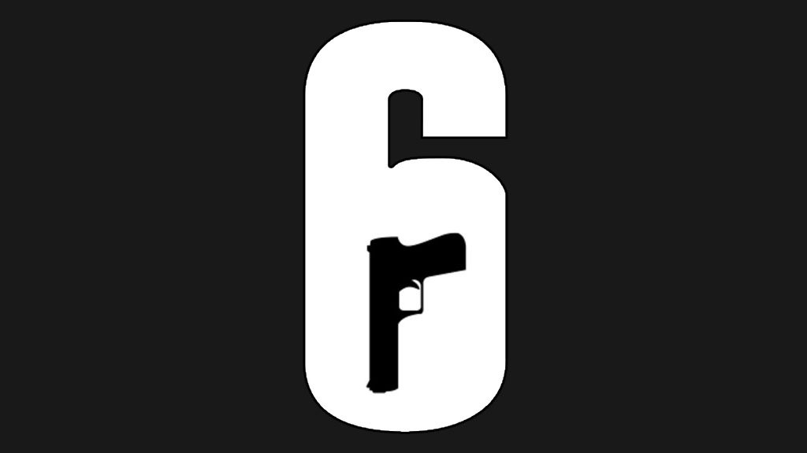

Questionário: Rainbow Six Siege
Responda algumas perguntas sobre sua vida no campo!
Quais são as duas equipes que se enfrentam em uma partida padrão de Rainbow Six Siege?
Como é chamada a fase inicial de uma rodada, onde os Atacantes usam drones e os Defensores preparam suas defesas?
O que os Defensores podem usar para impedir que paredes 'moles' e alçapões sejam facilmente destruídos?
Selecione uma opção
Reforços de parede
Barricadas de porta
Arame farpado
Escudos expansíveis
A maioria dos ambientes em Rainbow Six Siege é destrutível. Qual tipo de superfície NÃO pode ser destruída por meios normais (tiros, socos)?
Enviar Respostas